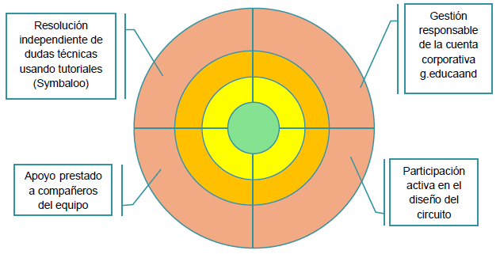

<b><span style="font-size:12.0pt;line-height:115%; font-family:"Arial",sans-serif;mso-fareast-font-family:Aptos;mso-fareast-theme-font: minor-latin;mso-ansi-language:ES;mso-fareast-language:EN-US;mso-bidi-language: AR-SA">Rúbrica de Evaluación: Proyecto de Circuitos Eléctricos</span></b>
¡Ahora toca evaluaros y más importante aún autoevaluaros!
Para ello evaluaremos de 2 maneras diferentes: mediante una rúbrica analítica para el Producto Final Multimedia, que se hará al finalizar la Fase 4. Comunicamos y Divulgamos.
| Aspecto a evaluar | Excelente (4) | Bien (3) | Regular (2) | Insuficiente (1) |
| Diseño y Simulación (Crit. 1.2) | El circuito en TinkerCAD funciona perfectamente. Incluye cálculos precisos y usa componentes avanzados. | El circuito funciona correctamente en la simulación, aunque falta algún detalle técnico menor. | El circuito funciona parcialmente o presenta errores de conexión que afectan al resultado. | El circuito no funciona o no se ha completado la simulación en la herramienta. |
| Comunicación Multimedia (Crit. 4.1) | La presentación (Genially/Canva) es muy atractiva, organizada y explica con total claridad el proceso técnico. | La presentación es clara y está bien organizada, explicando los puntos clave del proyecto. | La presentación es poco visual o le falta información relevante sobre el diseño de los circuitos. | El producto multimedia está desorganizado, es difícil de entender o está incompleto. |
| Ética y Licencias (Crit. 6.2) | Crea contenido original, cita todas las fuentes y utiliza correctamente las licencias Creative Commons. | Crea contenido propio y cita la mayoría de los recursos ajenos utilizados en la presentación. | Utiliza recursos de internet sin citar autoría o no especifica la licencia de su propio trabajo. | No respeta los derechos de autor y copia contenidos de terceros sin ningún tipo de referencia. |
<b><span style="font-size:12.0pt;line-height:115%; font-family:"Arial",sans-serif;mso-fareast-font-family:Aptos;mso-fareast-theme-font: minor-latin;mso-ansi-language:ES;mso-fareast-language:EN-US;mso-bidi-language: AR-SA">Diana de Autoevaluación "Mi Autonomía y Cooperación"</span></b>
Se trata de una evaluación procesual, de la que deberéis reflexionar sobre vuestra propia evolución. Se hará al final las fases 2 y 3 (Diseño y Gran Reto).
Se evaluarán los criterios:
- 1.1. Definir problemas o necesidades planteadas, buscando y contrastando información de manera crítica y segura. Resuelven los problemas buscando en los diferentes recursos aportados.
- 2.1. Idear y diseñar soluciones eficaces, innovadoras y sostenibles a problemas definidos. Dan solución de los problemas encontrados.
Vamos a trabajar con una Diana de autoevaluación:

Niveles de Consecución (de adentro hacia afuera):
- Nivel 1 (Centro): "Necesito mucha ayuda". El alumno se siente bloqueado ante las tareas o problemas técnicos.
- Nivel 2: "En proceso". Lo intenta, pero requiere supervisión constante del grupo o del docente.
- Nivel 3: "Logrado". Realiza las tareas de forma autónoma siguiendo las guías proporcionadas.
- Nivel 4 (Exterior): "Experto/Líder". No solo es autónomo, sino que es capaz de guiar y enseñar a sus compañeros.